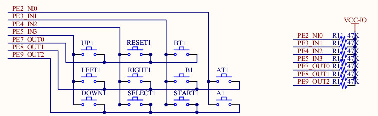
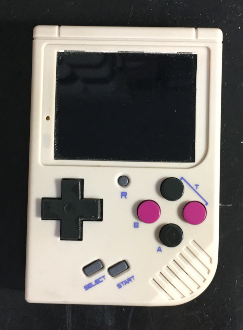
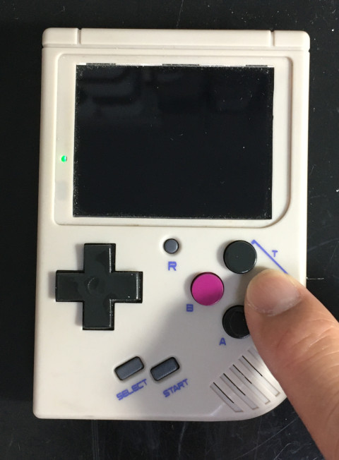

參考資料：
http://nano.lichee.pro/
https://mangopi.org/mangopi_r
https://www.allwinnertech.com/index.php?c=product&a=index&pid=4
電路圖


.global _start
.equiv GPIO_BASE, 0x01c20800
.equiv PA, (0x24 * 0)
.equiv PE, (0x24 * 4)
.equiv PORT_CFG0, 0x00
.equiv PORT_CFG1, 0x04
.equiv PORT_DATA, 0x10
.equiv PORT_PUL0, 0x1c
.arm
.text
_start:
.long 0xea000016
.byte 'e', 'G', 'O', 'N', '.', 'B', 'T', '0'
.long 0, __spl_size
.byte 'S', 'P', 'L', 2
.long 0, 0
.long 0, 0, 0, 0, 0, 0, 0, 0
.long 0, 0, 0, 0, 0, 0, 0, 0
_vector:
b reset
b .
b .
b .
b .
b .
b .
b .
reset:
ldr r0, =GPIO_BASE
ldr r1, =0x10
str r1, [r0, #(PA + PORT_CFG0)]
ldr r1, =0x02
str r1, [r0, #(PA + PORT_DATA)]
ldr r1, =0x11000011
str r1, [r0, #(PE + PORT_CFG0)]
ldr r1, =0x01
str r1, [r0, #(PE + PORT_CFG1)]
ldr r1, =~0x380
str r1, [r0, #(PE + PORT_DATA)]
0:
ldr r1, [r0, #(PE + PORT_DATA)]
lsr r1, #1
str r1, [r0, #(PA + PORT_DATA)]
b 0b
.end
完成

